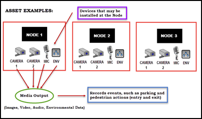
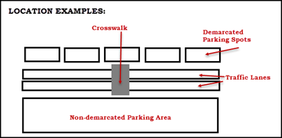
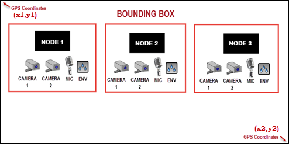

© 2015-2016 General Electric Company. All rights reserved.
© 2015-2016 General Electric Company. All rights reserved.| Parameter | Definition |
|---|---|
| asset | For Intelligent Environments, an asset is a physical object, such as equipment or a device, such as a sensor, which has the capability to collect or exchange data. It corresponds to a device-type, media-type, or event-type. An asset can be a device such as a NODE (parent asset) or a camera, that can capture certain media and events.  |
| location | A location is a monitored area, such as a parking lot, crosswalk, or a traffic lane.  |
| node | A node is a parent asset to other device types. A node can be an intelligent lighting apparatus, while an installed device type can be a camera, microphone, and/or environmental sensor. More than one device type can be installed on the node. See the Bounding Box graphic below. |
| bbox | A bounding box (bbox) establishes the periphery of a searchable area. You define a bounding box using GPS coordinates obtained from a map application such as Google Maps. For information on defining bounding boxes, see the query parameters in the Get List of Nodes or Get List of Assets sections. A node can have any or all of the devices attached. Example bbox values: 32.715675:-117.161230,32.708498:-117.151681 The following assets reside within a bound area: |
| device-id, location-id, media-id, event-id | These identifiers are user-generated external or customer identifiers for assets and locations. This ID differs from the GE-generated IDs referenced in this document that use 10 digits for assets and locations. |
| timestamp | All timestamps are in UTC long format, representing the time in milliseconds since the standard base time (EPOCH). If you use the same timestamp for start-ts and end-ts, a single result is returned. |